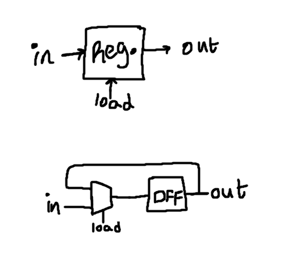
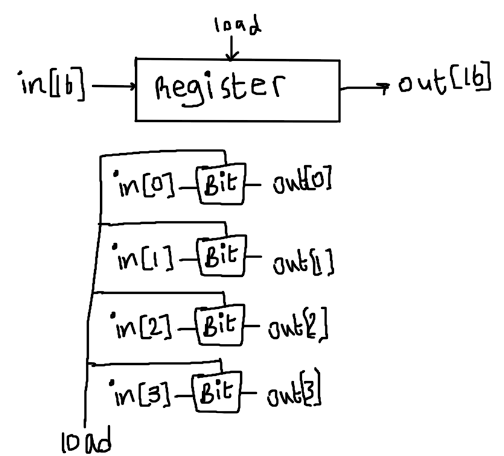
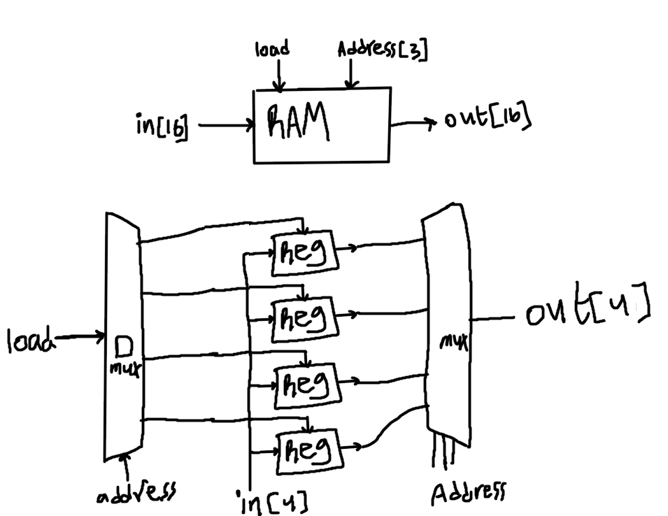
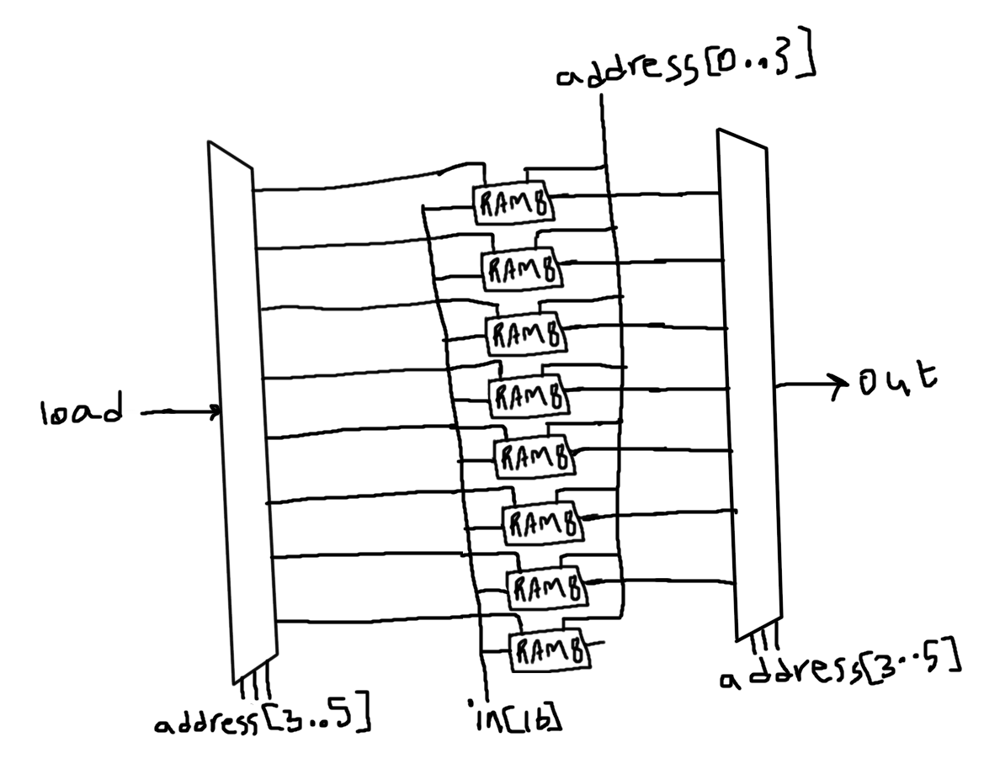
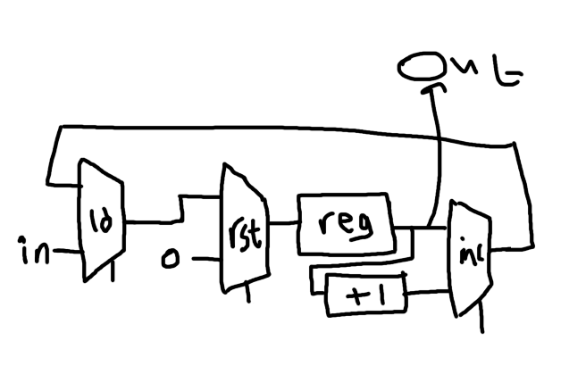

nand2tetris_p3
1. 1-Bit Register
goal is to create a register with two inputs, load and in where the in bit will set the content of the register and the load bit will decide whether we read or write.
here is the abstraction and implementation: 
// This file is part of www.nand2tetris.org
// and the book "The Elements of Computing Systems"
// by Nisan and Schocken, MIT Press.
// File name: projects/03/a/Bit.hdl
/**
* 1-bit register:
* If load[t] == 1 then out[t+1] = in[t]
* else out does not change (out[t+1] = out[t])
*/
CHIP Bit {
IN in, load;
OUT out;
PARTS:
Mux(a=DFFOut, b=in, sel=load, out=MuxOut);
DFF(in=MuxOut, out=out, out=DFFOut);
}
2. 16-bit Register:
we are just going to stack 1-Bit registers (here is an example below for a 4-Bit register) : 
// This file is part of www.nand2tetris.org
// and the book "The Elements of Computing Systems"
// by Nisan and Schocken, MIT Press.
// File name: projects/03/a/Register.hdl
/**
* 16-bit register:
* If load[t] == 1 then out[t+1] = in[t]
* else out does not change
*/
CHIP Register {
IN in[16], load;
OUT out[16];
PARTS:
Bit(in=in[0], load=load, out=out[0]);
Bit(in=in[1], load=load, out=out[1]);
Bit(in=in[2], load=load, out=out[2]);
Bit(in=in[3], load=load, out=out[3]);
Bit(in=in[4], load=load, out=out[4]);
Bit(in=in[5], load=load, out=out[5]);
Bit(in=in[6], load=load, out=out[6]);
Bit(in=in[7], load=load, out=out[7]);
Bit(in=in[8], load=load, out=out[8]);
Bit(in=in[9], load=load, out=out[9]);
Bit(in=in[10], load=load, out=out[10]);
Bit(in=in[11], load=load, out=out[11]);
Bit(in=in[12], load=load, out=out[12]);
Bit(in=in[13], load=load, out=out[13]);
Bit(in=in[14], load=load, out=out[14]);
Bit(in=in[15], load=load, out=out[15]);
}
3. RAM8
the circuit speaks for itself :p (note i'm also doing it for 4-bits smh) 
// This file is part of www.nand2tetris.org
// and the book "The Elements of Computing Systems"
// by Nisan and Schocken, MIT Press.
// File name: projects/03/a/RAM8.hdl
/**
* Memory of 8 registers, each 16 bit-wide. Out holds the value
* stored at the memory location specified by address. If load==1, then
* the in value is loaded into the memory location specified by address
* (the loaded value will be emitted to out from the next time step onward).
*/
CHIP RAM8 {
IN in[16], load, address[3];
OUT out[16];
PARTS:
DMux8Way(in=load, sel=address, a=load1, b=load2, c=load3, d=load4, e=load5, f=load6, g=load7, h=load8);
Register(in=in, load=load1, out=OutRegister1);
Register(in=in, load=load2, out=OutRegister2);
Register(in=in, load=load3, out=OutRegister3);
Register(in=in, load=load4, out=OutRegister4);
Register(in=in, load=load5, out=OutRegister5);
Register(in=in, load=load6, out=OutRegister6);
Register(in=in, load=load7, out=OutRegister7);
Register(in=in, load=load8, out=OutRegister8);
Mux8Way16(a=OutRegister1, b=OutRegister2, c=OutRegister3, d=OutRegister4, e=OutRegister5, f=OutRegister6, g=OutRegister7, h=OutRegister8, sel=address, out=out);
}
4. RAM64,RAM512, RAM5k and RAM16k:
In these we are going to use the same concept... here is the diagram for the simplest of them, the RAM64: 
// This file is part of www.nand2tetris.org
// and the book "The Elements of Computing Systems"
// by Nisan and Schocken, MIT Press.
// File name: projects/03/a/RAM64.hdl
/**
* Memory of 64 Registers, each 16 bit-wide. Out holds the value
* stored at the memory location specified by address. If load==1, then
* the in value is loaded into the memory location specified by address
* (the loaded value will be emitted to out from the next time step onward).
*/
CHIP RAM64 {
IN in[16], load, address[6];
OUT out[16];
PARTS:
DMux8Way(in=load, sel=address[3..5], a=load1, b=load2, c=load3, d=load4, e=load5, f=load6, g=load7, h=load8);
RAM8(in=in, load=load1, address=address[0..2], out=OutRAM1); //0..8
RAM8(in=in, load=load2, address=address[0..2], out=OutRAM2); //9..16
RAM8(in=in, load=load3, address=address[0..2], out=OutRAM3); //17..24
RAM8(in=in, load=load4, address=address[0..2], out=OutRAM4); //25..32
RAM8(in=in, load=load5, address=address[0..2], out=OutRAM5); //33..40
RAM8(in=in, load=load6, address=address[0..2], out=OutRAM6); //41..48
RAM8(in=in, load=load7, address=address[0..2], out=OutRAM7); //49..56
RAM8(in=in, load=load8, address=address[0..2], out=OutRAM8); //57..64
Mux8Way16(a=OutRAM1, b=OutRAM2, c=OutRAM3, d=OutRAM4, e=OutRAM5, f=OutRAM6, g=OutRAM7, h=OutRAM8, sel=address[3..5], out=out);
}
// This file is part of the materials accompanying the book
// "The Elements of Computing Systems" by Nisan and Schocken,
// MIT Press. Book site: www.idc.ac.il/tecs
// File name: projects/03/b/RAM512.hdl
/**
* Memory of 512 registers, each 16 bit-wide. Out holds the value
* stored at the memory location specified by address. If load==1, then
* the in value is loaded into the memory location specified by address
* (the loaded value will be emitted to out from the next time step onward).
*/
CHIP RAM512 {
IN in[16], load, address[9];
OUT out[16];
PARTS:
DMux8Way(in=load, sel=address[6..8], a=load1, b=load2, c=load3, d=load4, e=load5, f=load6, g=load7, h=load8);
RAM64(in=in, load=load1, address=address[0..5], out=OutRAM1);
RAM64(in=in, load=load2, address=address[0..5], out=OutRAM2);
RAM64(in=in, load=load3, address=address[0..5], out=OutRAM3);
RAM64(in=in, load=load4, address=address[0..5], out=OutRAM4);
RAM64(in=in, load=load5, address=address[0..5], out=OutRAM5);
RAM64(in=in, load=load6, address=address[0..5], out=OutRAM6);
RAM64(in=in, load=load7, address=address[0..5], out=OutRAM7);
RAM64(in=in, load=load8, address=address[0..5], out=OutRAM8);
Mux8Way16(a=OutRAM1, b=OutRAM2, c=OutRAM3, d=OutRAM4, e=OutRAM5, f=OutRAM6, g=OutRAM7, h=OutRAM8, sel=address[6..8], out=out);
}
5.PC
here is the diagram: 
// This file is part of www.nand2tetris.org
// and the book "The Elements of Computing Systems"
// by Nisan and Schocken, MIT Press.
// File name: projects/03/a/PC.hdl
/**
* A 16-bit counter with load and reset control bits.
* if (reset[t] == 1) out[t+1] = 0
* else if (load[t] == 1) out[t+1] = in[t]
* else if (inc[t] == 1) out[t+1] = out[t] + 1 (integer addition)
* else out[t+1] = out[t]
*/
CHIP PC {
IN in[16],load,inc,reset;
OUT out[16];
PARTS:
Mux16(a=incMuxOut, b=in, sel=load, out=loadMuxOut);
Mux16(a=loadMuxOut, b=false, sel=reset, out=resetMuxOut);
Register(in=resetMuxOut, load=true, out=regOut, out=out);
Inc16(in=regOut, out=incOut);
Mux16(a=regOut, b=incOut, sel=inc, out=incMuxOut);
}